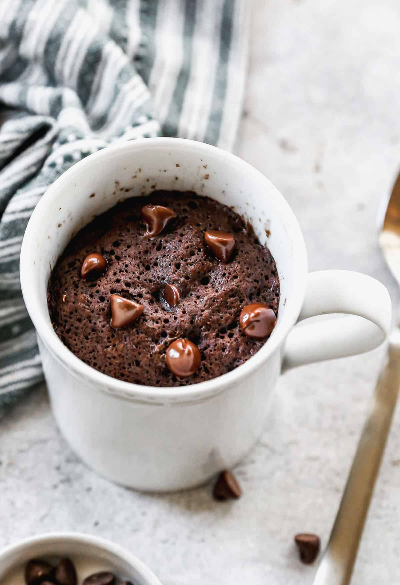

Home
A simple Mug Cake recipe

Description
A simple mug cake recipe.
Easy to prepare - all you need is some basic ingredients and a microwave!
Ingredients:
- 4 tbsp (30g) all-purpose flour
- 2 tbsp (15g) cocoa powder
- 2 tbsp (25g) sugar
- ¼ tsp baking powder
- Pinch of salt
- 3 tbsp (45ml) milk
- 2 tbsp (30ml) vegetable oil (or melted butter)
- ¼ tsp vanilla extract (optional)
- 1 tbsp (15g) chocolate chips (optional)
Instrucions:
- In a microwave-safe mug, mix flour, cocoa powder, sugar, baking powder, and salt.
- Add milk, oil, and vanilla extract. Stir until smooth.
- (Optional) Fold in chocolate chips for extra gooeyness.
- Microwave on high for 60–90 seconds, depending on your microwave’s power (start with 60 seconds and check).
- Let it cool for a minute before eating.